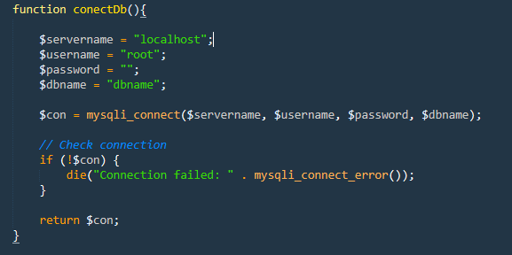
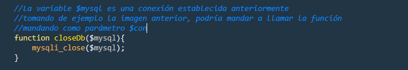
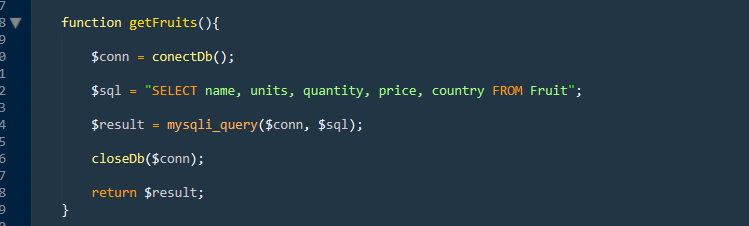
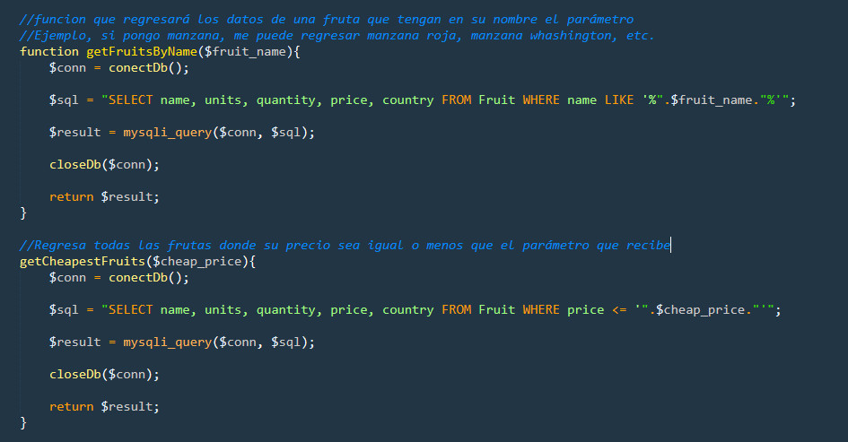
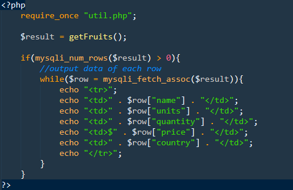

Lab 14: php y consultas dinámicas a la base de datos
Descripción
En esta actividad conoceremos como conectarnos a una base de datos usando php.
Modalidad
Individual.
Objetivos de aprendizaje
- Continuar con el dominio del lenguaje php
- Aprender a hacer consultas y manipular registros de una bases de datos con php
Instrucciones
- Completa los tutoriales de php y bases de datos en http://www.w3schools.com/php/php_mysql_intro.asp.
- Utiliza una arquitectura MVC
- Revisa la presentación Multitier Aplication Architecture-The Model
- Una vez que hayas completado los tutoriales y revisado la presentación, crearemos nuestra librería de manejo de base de datos.
-
1.- Crea un nuevo archivo y llámalo
util.php. - 2.- Haz una función llamada connectDb la cual validará que la conexión sea correcta. 
- 3.- Haz una función llamada closeDB que recibirá como parámetro una conexión establecida previamente. 
-
4.- Haz una función que te permita obtener todos los objetos de una base de datos.
En esta ocasión, siguiendo con mi tabla "fruit", regresaré todo lo que se encuentra ahí.  - 5.- Haz por lo menos dos funciones que hagan una consulta a la base de datos con algunos parametros. 
-
6.- Despliega las funciones hechas anteriormente en algunas vistas.

-
1.- Crea un nuevo archivo y llámalo
Preguntas a responder
- ¿Qué es ODBC y para qué es útil?
- ¿Qué es SQL Injection?
- ¿Qué técnicas puedes utilizar para evitar ataques de SQL Injection?
Especificaciones de entrega
A través de tu repositorio personal (Bitbucket o GitHub)